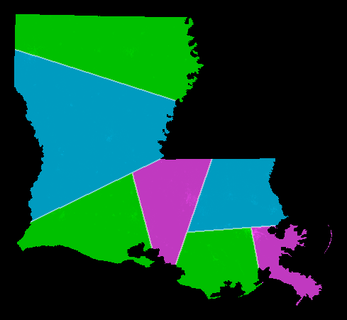

Warren D. Smith, March 2018.
The original shortest splitline algorithm was invented, and put on this web site, by Warren D. Smith (me), in the early 2000s. Its goal was to partition a state (2D region) into N equipopulous districts in a simple, unique, and aesthetically pleasing manner. Later, several other people invented variants of the original algorithm, which have various advantages and disadvantages.
ShortestSplitLine( State, N ){
If N=1 then output entire state as the district (and halt);
A = floor(N/2);
B = ceiling(N/2);
find shortest splitline resulting in A:B pop ratio (breaking ties,
if any, as described in notes);
Use it to split the state into the two HemiStates SA and SB;
ShortestSplitLine( SB, B );
ShortestSplitLine( SA, A );
}
Notes:
Example:
Want N=7 districts. Split at top level: 7 = 4+3. Split at 2nd level: 7 = (2+2) + (1+2). Split at 3rd level: 7 = ((1+1) + (1+1)) + ((1) + (1+1)). result: 7 districts, all exactly equipopulous.The picture shows Louisiana thus-districted using the shortest splitline algorithm using year-2000 census data. (More US states collected at /SplitLR.html.) 
Rather than using the "shortest splitline," Minet suggests using "the shortest path which follows census-block boundaries" to split the state.
Inexactness. If this is done, then A:B exact integer ratio population splits will usually be impossible, so we would have to accept slightly-inexact population splits. So there really would need to be kludgy extra new rules about just what is acceptable/not and what is the "best" split each time ("best" would somehow incorporate both the desire to keep the splitline short, and the desire to keep the ratio-error small).
Polynomial time. Known polynomial time-algorithms can compute every A↔B shortest path for all pairs of vertices (A,B) of the census-block map. Therefore Minet's variant still is polytime computable.
Manipulability. Unfortunately, a corrupt Census department (or whoever draws the map of "census blocks"), could easily manipulate Minet into gerrymandering. Design the blocks to have wiggly boundaries, or smooth boundaries, in different places. This will "steer" the splitting-process into using the smooth parts only. The resulting districts then will be gerrymandered pretty much exactly the way the manipulator wanted.
Also, even if the census blocks all were axis-parallel rectangles on a flat Earth, a corrupt census department still can gerrymander the hell out of Minet's shortest-path variant, since
-------------------------------------------------------------------- | | | | | | | | -------------------------------------------------------------------- | | | | | | | -------------------------------------------------------------------- | | | | | | | | -------------------------------------------------------------------- | | | | | | | | -------------------------------------------------------------------- | | | | | | | | -------------------------------------------------------------------- | | | | | | | --------------------------------------------------------------------is going want to cut horizontally and not vertically – or I could design it to inspire the other way if I wanted – whichever way I want wherever I want. This seems very bad indeed, because it suggests that even natural-sounding laws about what census-blocks had to be like, would be inadequate to prevent this problem.
In contrast, the original line-based splitline algorithm, as well as the Yorav-Raphael and Langstraat variants below (if their input is the set of locations of all the people) simply are not manipulable.
This manipulation-risk is quite worrying since in 2018, President Donald J. Trump made several different apparent attempts to manipulate the upcoming 2020 census in favor of the Republican Party:
The problem with (1) was Brunell had little or no prior experience either managing large organizations or in federal statistics. And his "brilliant discovery" underlying his book – that people were happier with their congressman in noncompetitive districts – is rather absurd. Obviously, by definition, more people are happier with a congressman they elect by landslide 80-20 margin, than one elected 51-49. So if we gerrymander two districts electing congressmen A and B, so that district #1 becomes almost entirely A-supporters, and district #2 becomes almost entirely B-supporters, then voila, we get "more happiness" of people with "their" congressman. But so what? This was an accounting trick. The actual congress is the same (A & B) in both cases and gerrymandering has not been an "improvement" as reckoned by the trick, but rather a "worsening" as reckoned by reality. (By that reasoning all democracy should be terminated!)
The actually-important question is whether the resulting governments will make their people happier in the long term. There is plenty of evidence that nondemocratic governments, overall, do not.
The problem with (2) was that this question was felt likely to scare noncitizens into hiding and not sending in their census forms. This scare-risk was felt likely to damage the census's accuracy to an extent outweighing the benefits from greater citizenship-understanding. (Note: the census, by constitutional demand, must count both citizens and noncitizens, although only citizens can vote.) Although the Census usually field-tests proposed question-changes to estimate effects, in this case the decision was made (by Trump's Commerce Secretary Wilbur Ross) without any such testing. A January 2018 letter signed by six former directors of the census
[Vincent P.Barabba(1973-1976;1979-1981), Martha Farnsworth Riche(1994-1998), Kenneth Prewitt(1998-2001), Steven H.Murdock(2008-2009), Robert M.Groves(2009-2012), John Thompson(2013-2017)]
warned the Trump administration against this move, but was ignored. Further, the places suspected to be richest in noncitizens during 2018 were suspected to correlate well with places richest in Democratic voters. If so, this effect would systematically reduce the number of Democratic and increase the number of Republican congressmen.
Instead of splitting the population into an A:B ratio using the shortest splitline, use the line minimizing the summed variance of the resulting two populations (viewed as sets of points in Euclidean 3-space). Another possibility would be to minimize A·variance1+B·variance2.
Extra simplicity: With Yorav-Raphael's variant, we pretty much no longer need to think about "lengths" and geometry at all. A "district" is now best regarded as the set of its people. We never need any initial "boundary curve" for a state – all we ever need to know is the set of locations of its inhabitants, a "point cloud."
Personally I find this extra simplicity very appealing.
Instead of splitting the population into an A:B ratio using the shortest splitline, with all lines (more precisely, geodesic arcs) being permitted, demand the splitline must be either a meridian or line of constant latitude (i.e, more precisely, "arc of a circle lying in a plane parallel to the equator"). So on a Mercator projection map, Langstraat allows only vertical or horizontal lines.
Advantages: Since there are fewer allowed splitlines to consider, the algorithms can be faster and simpler. The districts all now are rectangles if drawn on a Mercator projection, or Lambert cylindrical-orthogonal projection, or actually any cylindrical projection, map. Langstraat remarks "It's hip to be square." In contrast, with original or Yorav-Raphael, the districts would be arbitrary polygons drawn on the sphere with geodesic-arcs as edges (which are straight line segments on gnomonic projection maps). These could be triangles, quadrilaterals, pentagons, or hexagons, ..., although quadrilaterals seem the most common and having >6 sides is rare.
Mathematical Disadvantages: Lines of latitude are not geodesic arcs, i.e. not shortest paths. We live on a sphere, not on a Mercator projection flat map. And Langstraat's algorithm now is not invariant under arbitrary rotations of that sphere. All those are mathematically somewhat unnatural.
The "unnaturalness" would cause, e.g, Langstraat to district Long Island substantially differently if it were re-oriented with its long direction pointing Northeast rather than East. (Presumably the performance would be substantially worse for the SW-NE orientation.) In contrast, original splitline and Yorav-Raphael would be unaffected by any such reorientation.
Real-world advantages: Although Langstraat might seem somewhat stupid if it tried to draw districts near the North pole, it just so happens that almost nobody lives near the North and South poles. And many US state (and some international) boundaries just happen to have been defined with lines-of-latitude and/or meridian-arcs. And lines of latitude just happen to coincide pretty well with with temperature, and meridians with time zones, both of which humans find pretty important. And there is a long historical tradition of making Mercator projection (and cylindrical-orthogonal projection) maps. And Long Island happens to be oriented pretty close to West→East (more precisely, it is rotated about 16° anticlockwise from that). And a lot of commercial picture-displaying devices have square-grids of pixels. While most of these facts are somewhat accidental, Langstraat's algorithm coexists very happily with them.
How are street-grids oriented in cities? The table shows the approximate orientation of the grid in degrees anticlockwise from a horizontal/vertical grid. (Cities like Berlin, London, Sao Paolo, Beijing, and Paris which do not really have rectangular grids at all, are omitted from the table.) There are a goodly number of cities with exactly NS/EW oriented grids, but there also are many at other random angles, plus it appears to be popular to orient the grid just a few degrees away from NS/EW.
| City | Angle | City | Angle | City | Angle |
|---|---|---|---|---|---|
| Manhattan | 65 | Mexico City | 65 | Boston | 68 |
| Los Angeles | 0 | Lima | 56 | Melbourne | 76 |
| Chicago | 0 | San Francisco | 4 | Portland | 89 |
| Richmond | various | Omaha | 87 | Miami | 87 |
| Orlando | 0 | Xi'an | 0 | Sacramento | 87 |
| Minneapolis | 0 | Savannah | 75 | Tucson | 0 |
| Philadelphia | 77 | Houston | 0 | Washington | 87 |
| Toronto | 14 | Vancouver | 88 | Turin | 64 |
| Adelaide | 3 | Glasglow | various | Barcelona | 50 |
Suppose instead of splitting the state's population into A:B ratio with integer A,B and 1≤A≤B≤A+1 and A+B=N each time (original version), we instead split it into integer A:B ratio with 1≤A≤B≤A+K and A+B=N. Here K originally was 1, forcing best-balanced splits during the intermediate stages of the algorithm. If we allowed K to be larger, such as 2 or 3, that would allow somewhat less-balanced splits.
This also would stop the map from being unique. With K=1, splitlining produced a single unique map. With K≥2, it produces many maps, but that is not a problem because we can winnow the set of maps down to a unique best one by choosing the "best" among them. "Best" could mean, e.g, "with least total cutlength." With any clear definition of best, we still get a unique best member of the bevy of maps, at the end of the process.
How many maps do we get? The answer is that the number of maps is always upper bounded by Nβ where the exponent β is given by the formula β=log2(K).
This is a quite feasibly small number of maps to consider, so this optimization is entirely feasible for a computer to do if, say, K≤4 (then ≤N2 maps). For any fixed K≥1 we still have a polytime algorithm.
This optimizing has the potential to dodge occasional problems with plain splitlining maps such as thin-sliver districts. Just so long as at least one of the bevy of ≈Nβ maps is free of the problem, we probably now avoid it.
If desired, Langstraat's and Yorav-Raphael's variants could be combined. (It also would be possible to combine Minet's and Yorav-Raphael's variants.) And the optimization idea can be combined with any of them.
Let P be number of distinct people-locations (each person's location is input), and N be the number of districts to output. Let S be the number of boundary segments describing the shape of the state ("polygon with polygonal holes"). For "point-cloud only" algorithm variants, no shape information is needed and S is uninvolved in runtime and memory bounds. For all algorithms the memory-words requirement is O(P+N), or, for shape-info-using ones, O(P+N+S).
Let InvAck(x) denote the (extremely slow-growing) inverse of the (extremely fast-growing) Ackermann function.
Let Halve(m) denote the maximum possible number of combinatorially-distinct halving lines for a set of 2m points in the plane. (A "halving line" is a line that splits the 2m points into two subsets of cardinalities m and m.) Tamal Dey proved in 1997 that Halve(m)=O(m4/3). Erdös, Strauss, Lovasz, and Simonovits conjectured in 1973 that Halve(m)=m1+o(1).
| Variant | Worst-case runtime bounds |
|---|---|
| Langstraat+Yorav-Raphael hybrid | O(PlogN) |
| Langstraat | O(N S + P logN) and O([N+S]logS + P logN) |
| Yorav-Raphael | O([P + Halve(P) InvAck(P)] logN) |
| Original splitline | O(SlogS + [P + Halve(P+S) (InvAck(P+S) + logS)] logN) |
The lines of the table are listed best (i.e. fastest & simplest algorithms) first. All the runtime bounds are "slightly superlinear," i.e. the runtime is upper bounded by Q1+o(Q) where Q=P+S+N (assuming Erdös et al's conjecture holds). However, note: For the first line of the table, it is easy to see the claimed runtime bound, and easy to write a program that accomplishes it. In contrast, for all the others, it requires great skill and cleverness to construct any algorithm obeying any Q1+o(Q) worst-case runtime bound.
For "optimizing" versions, multiply any runtime bound (from any table line) by O(Nβ). [This still is "slightly superlinear" provided that (now) N is regarded as smaller than any power of P.]
I would like to see a pictorial comparison of the original versus Yorav-Raphael's, Langstraat's etc variants in action for a large number of states or countries. Right now, in the absence of any such large computation, I do not feel enough confidence to say. The original variant remains arguably the simplest, simple enough to explain to kindergartners (although Langstraat might counter-argue that his is the simplest); and even if it is not the best, it definitely is good enough for immediate practical use.